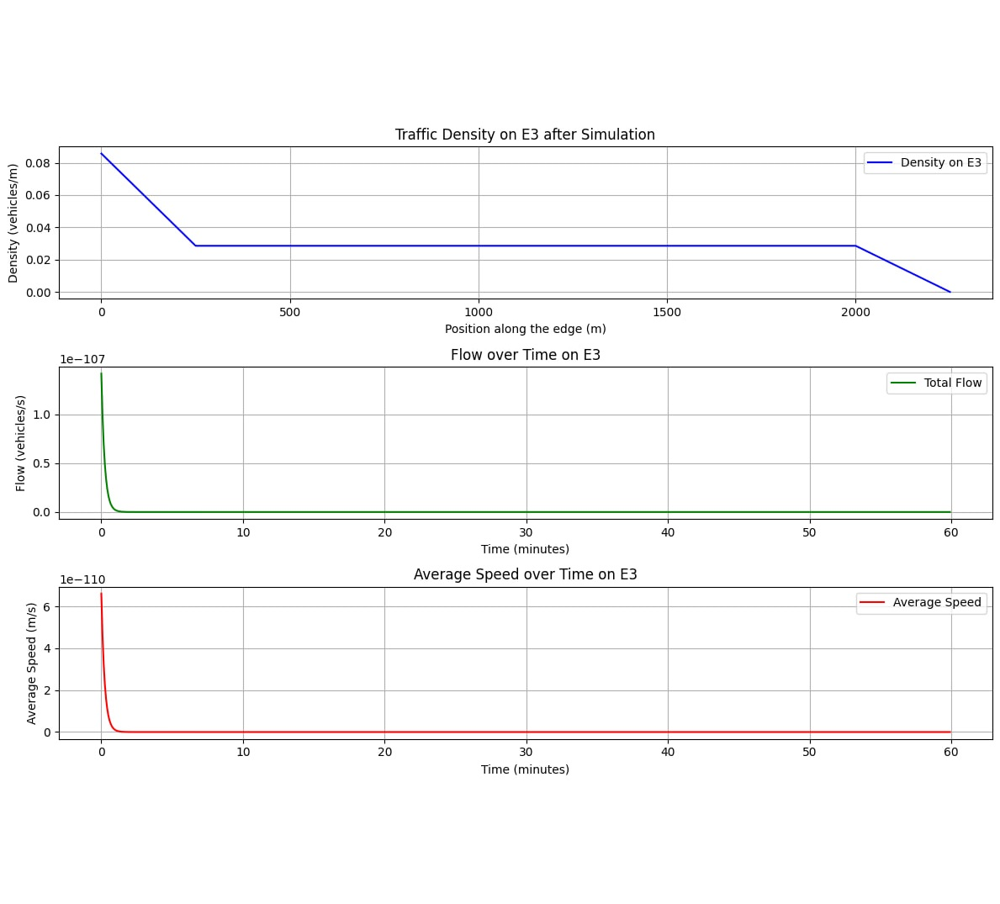

IntersectNET: Traffic flow? Managed
✖

IntersectNet enhances traffic flow by modeling intersections with transition functions between lanes, generating matrices whose elements, determined through machine learning, optimize vehicle movement. This approach aims to streamline urban traffic efficiency through data-driven intersection management strategies.RLHF-BMF is an iterative model comprising a chain of RLHF model annotators, with RLHF models annotating each other in a chain, culminating in a final RLHF model annotated by a human.
RLHF-BMF: Bias Mitigation Framework
✖

RLHF-BMF is an iterative model comprising a chain of RLHF model annotators, with RLHF models annotating each other in a chain, culminating in a final RLHF model annotated by a human.
Sentiment-STARity: Shopping Score Analysis
✖

Explore sentiment and star rating alignment in e-commerce reviews with Sentiment-STARity. Analyzing 82.83 million of Amazon product reviews to enhance shopping decisions through consistent rating evaluation.
WizChatterNet: Magical Characters are Chatting
✖

WizChatterNet let you experience the magic of Harry, Hermione, and Ron in a dynamic AI-driven dialogue system. These Telegram bots emulate the beloved trio, bringing their enchanting conversations to life, making the wizarding world interactive and engaging like never before